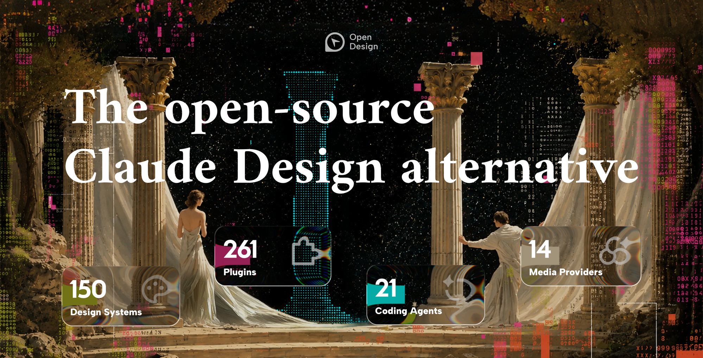
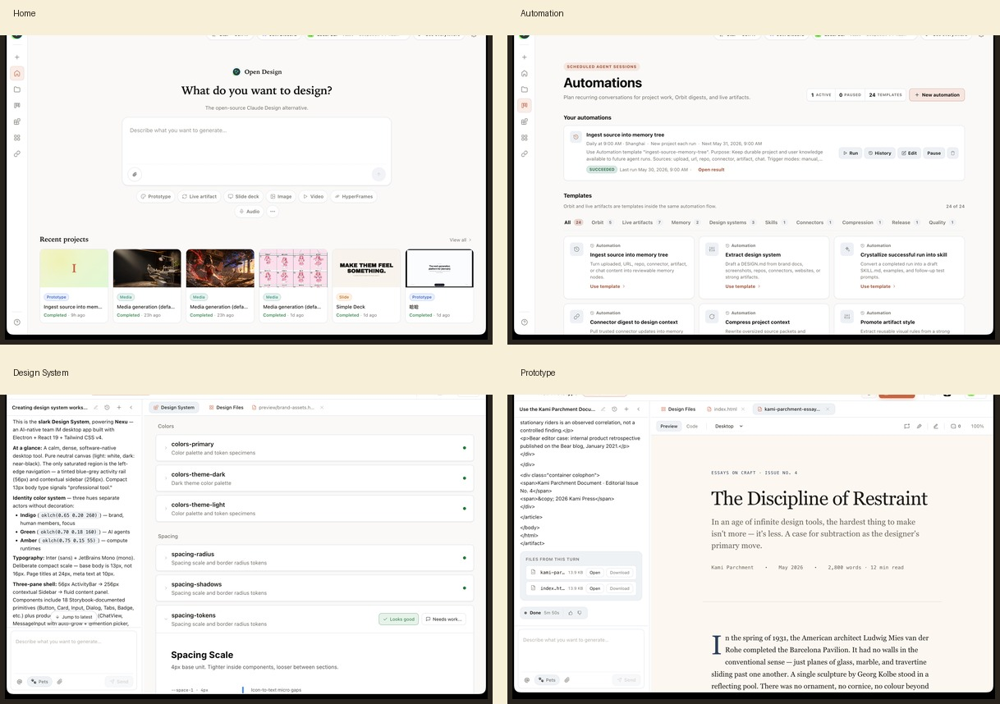

Open Design：把设计工作流变成可安装的 Agent Studio
它不是传统的设计画布，而是把 skills、DESIGN.md、plugins、MCP、CLI 和导出管线打包成一套本地优先的设计操作系统。目标不是替代 Figma 式拖拽，而是让 coding agents 直接读懂品牌约束、生成可交付的网页、PPT、图像和 MP4。

先给结论：它把设计能力从“封闭应用”拆成了“可安装、可编排、可复用”的工作流层
如果只看一句话，这个仓库的价值不是“又一个设计工具”，而是把 Claude Design 的闭环过程外化为文件系统与运行时。
Open Design 把 brief、方向锁定、artifact 流式生成、批评与交付这些原本锁在封闭产品里的步骤，转成了技能、设计系统、插件和 MCP/CLI 可调用的开放层；因此它更像“设计操作系统”而不是“设计软件”。
它对老用户的意义是：不用换掉你的 agent 生态，就能把设计能力挂到当前已经在用的 CLI、MCP、桌面 app 和自动化里。资源包结构：Skills、DESIGN.md、Plugins、MCP、CLI 是同一条链的不同入口
它不是单点功能，而是把“输入约束—执行入口—扩展能力”拆成了几层。
工作流链路：brief 不是终点，handoff 和 memory 才是闭环
README 里把整个过程写成了一条可执行链，而不是功能罗列。
Studio 里输出的不是一种图，而是一组交付物类型
同一个设计系统可以流到网页、动态图、演示文稿和图片，重点是“同源”。

▲ Product tour / 核心页面与 Studio 产物拼贴
Home、Automation、Design System、Plugin、Integrations 和 Studio 不是各自为政的页面，而是围绕同一套设计系统串起来的工作台。
平台兼容性：它本质上是把设计能力挂进主流 coding agents
README 的重点不是“支持多少平台”，而是“一条 install 命令把能力装进你正在用的 agent”。
Cursor、VS Code + Copilot
适合在日常编码环境中顺手调用设计能力，把它当成工作流插件而不是单独打开一个设计软件。
Claude Code、Codex、OpenClaw
直接通过 `od mcp install <agent>` 接入，能把 design skills 和 design system 绑定到已有的 agent 入口里。
OpenCode、Kimi、Gemini、Cline
对本地多 CLI 用户更友好，因为它默认假设你机器上已经有一个 agent 生态可被发现并复用。
BYOK / OpenAI-compatible
如果你不想锁定单一模型供应商，也可以接任何兼容 endpoint；这意味着它更像编排层，不是模型锁定器。
最小上手路径：桌面 app、agent 安装、Docker、源码四条路都通
从 README 看，官方给的是“零配置桌面优先”，但也保留了纯 agent 和开发者路径。
最快的零配置方式
直接下载安装包，macOS / Windows 优先，Linux 走 AppImage。适合想立刻体验而不碰 Node / pnpm 的用户。
把能力装进你现有的 agent
curl -fsSL https://open-design.ai/install.sh | sh -s <agent>，把能力注入 Claude / Codex / Cursor / Copilot / OpenClaw 等环境。
自托管 / 团队部署
适合需要统一环境和私有 token 的团队；README 里明确提供了 `docker compose up -d` 的部署路径。
开发者从源码跑
Node `~24` + pnpm `10.33.x`，本地先 `pnpm install`，再 `pnpm tools-dev run web`。这是最贴近仓库开发态的路径。
curl -fsSL https://open-design.ai/install.sh | sh -s claude
# 纯本地开发
git clone https://github.com/nexu-io/open-design.git
cd open-design
corepack enable && pnpm install
pnpm tools-dev run web
# Docker 自托管
cd open-design/deploy && docker compose up -d
边界与取舍：它不是一个普通设计软件，而是 agent 时代的工作流分发层
这个边界很重要：看对了，就知道它强在哪里；看错了，就会拿普通 UI 工具的标准去误判。
适合把设计变成可复用生产线
- 团队已经在用 Claude Code / Codex / Cursor / Copilot 等 agent。
- 希望把 brand contract 固化成 DESIGN.md 而不是靠口头记忆。
- 需要在同一套工作流里生成 prototype、deck、image、MP4。
不适合拿它当“传统拖拽画布”的同义词
- 如果你只想手工摆控件、拖框线，它不是最短路径。
- 它更依赖 CLI / MCP / skills 的理解，不是完全零概念工具。
- 你需要接受本地优先、BYOK、sandboxed preview 这种工程化前提。
最终判断
Open Design 的核心不是“生成一个漂亮页面”，而是把设计能力嵌入 agent 生态：谁来做、怎么做、按什么品牌规则做，都能被文件和插件系统接住。
一句话边界
它更像设计操作系统和工作流分发层；如果你把它当成 Figma 的小替代品，会低估它的工程化野心，也会误判它的使用门槛。